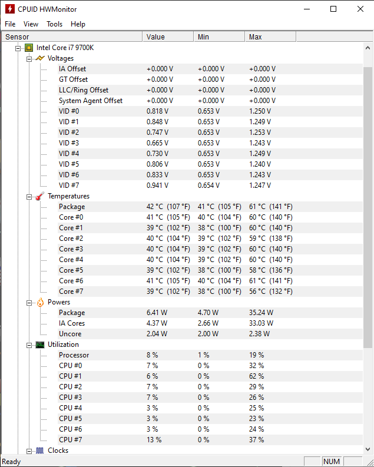
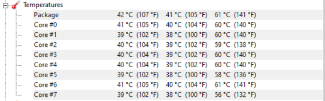
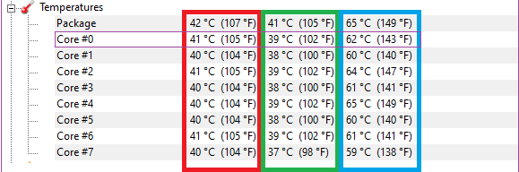

POWRÓT
Czujesz ¿e komputer zaczyna g³o¶niej dzia³aæ albo aura gor±ca od niego bije ?
1.Pobierz program HWmonitor
2.Uruchom go

3.Kiedy mamy ju¿ pobrany program wy¶wietla nam siê ogromna ilo¶æ numerków, nazw których specjalnie nazw nie musimy ¿eby siê dowiedzieæ temperatury.
4.Po nazwach szukamy nazwy naszego procesora z przyk³adu na zdjêciu mam Intel Core i7 9700K. Pamiêtamy ¿e najwa¿niejsze co szukamy w tej nazwie jest to albo “Intel” lub “Amd” poniewa¿ te dwie firmy tworz± procesory
5.nastêpnie mamy trochê kategorii do procesora m.in. Voltages, Temperatures, Powers… i w³a¶nie z tego zestawienia najbardziej interesuje nas temperatures
6.

7.Ka¿dy procesor ma swoj± ilo¶æ rdzeni, na za³±czonym przyk³adzie procesor ma 8 rdzeni, ka¿dy jak widaæ ma swoj± temperature

8.Pierwsza kolumna (czerwona )pokazuje aktualna temperature, druga kolumna (zielona) pokazuje najmniejsza uzyskana kiedykolwiek temperature, natomiast ostatnia (niebieska) kolumna pokazuje najwy¿sz± uzyskan± temperaturê
9.Na fioletowo zaznaczy³em temperatury jednego rdzenia ¿eby je przeanalizowaæ, maksymalna temperatura procesora jak± powinien osi±gaæ w komputerze stacjonarnym to oko³o 55 stopni Celsjusza natomiast w laptopie jest to 85 Stopni
10.Je¶li jest inaczej proponowa³bym udaæ siê do informatyka specjalisty który móg³by sprawdziæ stan past termoprzewodz±cych i termopadów, czy komputer nie jest oraz czy po prostu wiatraki nie przesta³y dzia³aæ
Projekt realizowany na olimpiadê "Zwolnieni z Teorii" Nie ma twojego problemu? Skontaktuj siê z nami poprzez formularz
Wszystkie prawa zastrze¿one Kopiowanie i rozpowszechnianie bez zgody Nak³adka E-Pomocy zabronione